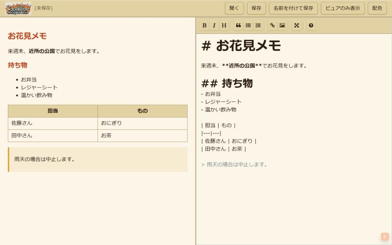
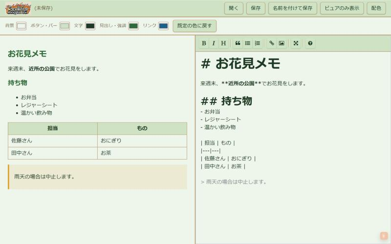
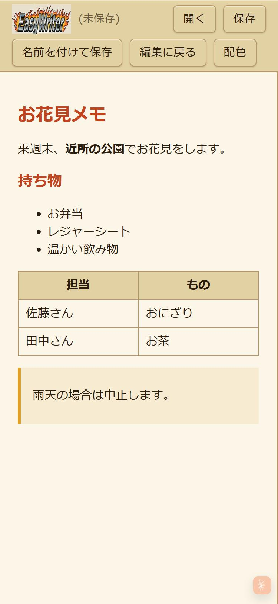

EasyWriter lite
インストールも会員登録も要りません。
1枚のHTMLファイルだけで動く、軽いMarkdownメモ帳です。
ブラウザだけで動く単体のMarkdownエディタ/ビュアーです。お手元のファイルをそのまま開いて、そのまま上書き保存できます。
ダウンロードしてお使いいただくのがおすすめです。あなたのファイルは常にお手元のパソコンだけで処理され、どこにも送信されません。
.mdファイルをダブルクリックで直接開けるようにする裏技もあります (やり方はGitHubで)
インストールも会員登録も要りません。
1枚のHTMLファイルだけで動く、軽いMarkdownメモ帳です。
ブラウザだけで動く単体のMarkdownエディタ/ビュアーです。お手元のファイルをそのまま開いて、そのまま上書き保存できます。
ダウンロードしてお使いいただくのがおすすめです。あなたのファイルは常にお手元のパソコンだけで処理され、どこにも送信されません。
.mdファイルをダブルクリックで直接開けるようにする裏技もあります (やり方はGitHubで)



無料でお使いいただけます。ファイルも画像も、すべてあなたのパソコンの中だけで完結し、どこにも送信されません。なおエディタ本体を毎回ネット経由で読み込む軽量設計のため、インターネット接続が無いと起動できません。
Markdownファイルってルールも簡単だし、平文で読んでもあまり記号が邪魔にならないのでいい感じだと思うのですが、なかなかよいビュアがありません。私の常用のEmEditorも装飾がちょっと貧弱です。そしてMarkdownを自分で一から書こうとすると、文法がよくわかっていないことに気づきます。サンプルを取り込んで加工する方法だと、どこかに昔の亡霊が残ってたりしますよね。
そこで「装飾がはっきりしてるビュアが欲しい。できればそれを見ながら加工できて、するする変わっていくようなやつが」とClaudeくんたちに頼んだら、さくさくっと作ってくれました。フォーカスしたらボタンでマークアップできて、しかも0.4秒デバウンスなのでちょい遅れで仕上がる様子を見ながら、書き込んだり修正したりしていけます。画像だけはリンクで逃げていますが、こんな割り切りが軽量でよいのだと思います。
.mdファイルをダブルクリックしたら、このエディタが立ち上がってくれるよいのですが、ブラウザ・アプリではそれができません。
.mdファイルはただのテキストなんだから、ブラウザに関連付けてそこからなんとかならないの?と頼むと、Claudeくん、さすがです。ブックマークレットを用意してくれました。ブラウザで生の.mdファイルを見ているときに、そのブックマークレットを起動するとあら不思議、たちまちEasyWriterが登場して編集可能になりますよ。
このHTMLファイルのファイルサイズは50KB程度。こんなんで、どうしてエディタができちゃうのだろう? 実はエディタの本体を自分では持たずインターネット経由で毎回借りてきているんですって。なので身軽な分、インターネットが繋がっていないと起動できないのはご容赦ください。そうそう、ブラウザアプリなのにファイルの読み書きはダイアログが現れて、上書き保存や別名保存もできる、というあたりもClaudeくんたちが頑張ってくれた成果です。
― 店主 佐々木
ご感想、不具合のご報告はこちらから。